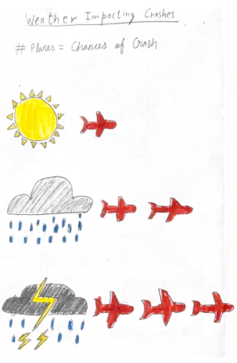

Dear Data
Flight Risk
One dataset. Many stories. We drew where, when, and why planes have crashed—like sending postcards from the data.
Dear Data
One dataset. Many stories. We drew where, when, and why planes have crashed—like sending postcards from the data.
This project is a visual correspondence with aviation incident data. Each section is a “postcard”: a question we asked of the data and the picture we drew in response. Scroll through the story.
Postcard 1 — What are we blaming?
We started by asking: when something goes wrong, what does the report say? Technical failure, weather, human factor, or unknown. This sketch is our first draft of that answer.
Each bubble represents a root-cause category assigned to crashes in the dataset. Bubble size reflects the number of crashes. Hover to see the exact count and overall share.
Postcard 2 — Where and when?
On the left, a globe that fills with crash points as you move through time. On the right, a line being drawn year by year, with a tiny plane tracing the rhythm of crashes.
Click on a crash point to see details
Use Play or move the year slider to see the most fatal crash for each year.
Postcard 4 — The official reason
From the same dataset we counted how often each “Crash cause” appears. Technical failure and Unknown lead; we leave the interpretation to you.
Postcard 5 — Takeoff, cruise, or landing?
We grouped crashes by flight phase. The size of each bubble is the number of crashes in that phase. Landing and takeoff stand out.
Postcard 6 — Which machines?
We drew each aircraft type as a circle; the more crashes, the bigger the bubble. Hover to see the count.
Postcard 7 — Where on the plane?
Based on a crash study, we mapped where survivors were found in different sections of the aircraft. The color shows relative fatality risk, i.e. darker zones had fewer survivors. Hover over the text to see the details.
Postcard 8 — When the sky turns
We wondered how often weather is named. This sketch is our idea of that relationship—another angle on the same data.

End of our data postcards. The dataset is incomplete and biased by reporting; these pictures are what we see in it, not the whole truth. — Team Flight Risk